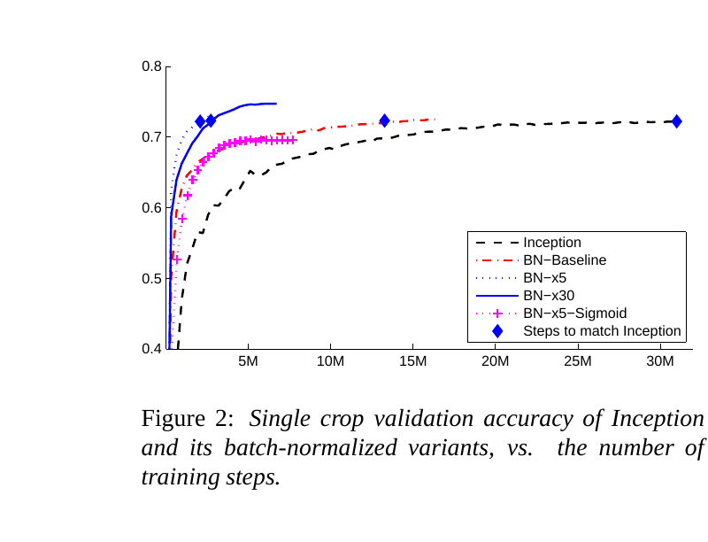

Before BatchNorm, training a deep ImageNet CNN with SGD was slow, and high learning rates made it diverge, because each layer's inputs drifted in center and scale as the weights changed (why normalize). Ioffe and Szegedy's fix: for each channel, compute the mean and spread over the whole batch and normalize with them [1].
A BatchNorm layer runs on every forward pass, after each conv. In training it normalizes with the current batch and nudges two stored averages per channel; at test time it uses only the stored averages. Use it in CNNs trained with a reasonable batch on each GPU; it is the default in ResNet-style image models. It is the wrong choice for transformers, where LayerNorm fits, and for tiny per-GPU batches (Section 5).
Figure 1. Training reads the batch and nudges the running averages; eval reads only the running averages.
2 Training: normalize each channel over the batch
For one channel, pool every image and every pixel position in the batch, and run the shared recipe on that pool. Inside ResNet-50 on an ImageNet batch, one channel might respond to vertical edges; BatchNorm gives that channel one center and one spread for the whole batch.
Channel \(c\)'s mean and spread over the pool, then normalize, then scale and shift.
Center and scale every number in the channel with the channel's batch statistics, so the whole channel has a zero center and a unit spread on this batch.
Each channel gets its own learned scale and shift.
This is the shared recipe with the slice \(S\) set to one channel across the batch. Because \(\mu_c\) depends on every image in the batch, each image's output depends on its batch mates.
Figure 2. One BatchNorm slice: the same channel in every image of the batch shares one mean and spread.
3 Test time: running statistics
At test time there may be one image, so there is no batch to average over, and a prediction should not depend on which other images happen to be processed with it. BatchNorm therefore keeps a running average of each channel's mean and variance during training, and uses those stored values at test time.
During training, each batch moves the stored statistics a little toward its own; at test time the stored values replace the batch's.
The stored spread does the same, using the unbiased batch variance; the \(m/(m-1)\) factor corrects for measuring the spread around the batch's own mean.
At test time the stored values replace the batch's, so each image is normalized on its own and the output no longer depends on the batch.
The eval line is the training \(\hat{x}\) line with the batch statistics swapped for stored ones. "run" marks a stored value; the hat stays reserved for "normalized".
PyTorch's default momentum is 0.1, so each batch moves the stored average a tenth of the way. This momentum is not an optimizer's momentum and runs the other way: here a larger value follows the newest batch more closely, while in an optimizer such as Adam a larger β keeps more of the past.
Figure 3. A smaller momentum needs many more batches before the stored average can be trusted.
At deployment the eval line is a fixed scale and shift per channel, so it can be folded into the conv weights and costs nothing at inference.
Eval: the same normalization with the stored values; nothing is updated.
5 When the batch is too small
Wu and He trained ResNet-50 on ImageNet on 8 GPUs and varied the number of images on each GPU; BatchNorm computes its statistics per GPU. They report top-1 error on the validation set. BatchNorm's error rises sharply as the images per GPU fall to 2, while GroupNorm's stays nearly flat [3]; their figure is on the GroupNorm page. The cause: the mean of a few images is a noisy estimate, so the same image is normalized differently in every batch, and the running averages no longer match what each layer saw in training.
32 images2 images
Figure 4. Lit cells are the numbers that share a mean. Each dot is one batch. Illustrative simulation.
nn.SyncBatchNorm computes the statistics across all GPUs, so the batch it averages over is the global one, at the cost of one communication step per BN layer (Section 8, code marker 3).
6 Evidence: faster training
Ioffe and Szegedy added BatchNorm to an Inception network trained on ImageNet [1]. BN-Baseline (BatchNorm only) reached Inception's own best accuracy much sooner. BN-x5 used a five times higher learning rate together with the paper's section 4.2.1 changes (dropout and local response normalization removed, faster learning-rate decay, less photometric distortion). BN-x30 used a thirty times higher rate and trained more slowly at first but ended higher. BN-x5-Sigmoid swapped ReLU for sigmoid and still trained, which plain Inception with sigmoid did not.

Figure 5.Ioffe and Szegedy (2015), Figure 2: Inception's validation accuracy over training, with and without BatchNorm.
Pick a learning rate to see which runs the paper reports at that rate.
Curves traced from Ioffe and Szegedy Figure 2.
7 When it breaks
Cause
Symptom
Fix
eval() not called
predictions change with the batch they are in
call model.eval() before evaluation and export
one or two images per GPU
validation error far above training error, unstable loss
running averages from a different distribution than the test data
good training accuracy, poor test accuracy after a domain shift
recompute the statistics on target data in train mode without gradient steps, or freeze BN
fine-tuning a detector with tiny batches while BN keeps updating
worse accuracy than with BN's statistics frozen at 2 images per GPU [3]
freeze BN's statistics, and usually \(\gamma\) and \(\beta\), as Detectron does
frozen BN undone by model.train()
statistics drift during fine-tuning although BN was "frozen"
call eval() on every BN module after each model.train(), or replace BN with torchvision.ops.FrozenBatchNorm2d [6]
a channel that is constant across the batch
division by a near-zero spread
\(\epsilon\) guards it; check for dead channels
8 In practice
momentum (default 0.1): higher follows recent batches, lower averages longer and needs a longer warm-up of the statistics (Figure 3). eps (default 1e-5): larger smooths near-flat channels. affine (default True): False drops \(\gamma\) and \(\beta\). track_running_stats (default True): False uses batch statistics at test time too.
block = nn.Sequential(
nn.Conv2d(in_channels, out_channels, kernel_size, padding=1, bias=False), # BN's shift makes a conv bias redundant
nn.BatchNorm2d(out_channels),
nn.ReLU(),
)
x = torch.randn(batch, in_channels, height, width) # N, C, H, W
block.train(); y = block(x) # batch statistics; running_mean, running_var,
block.eval(); y = block(x[:1]) # num_batches_tracked move only in train()
assert y.shape == (1, out_channels, height, width)
model = nn.SyncBatchNorm.convert_sync_batchnorm(block) # statistics over all GPUs
for m in model.modules(): # frozen BN for detection fine-tuning
if isinstance(m, nn.modules.batchnorm._BatchNorm):
m.eval() # re-apply after every model.train()
m.weight.requires_grad_(False)
m.bias.requires_grad_(False)
1Conv, BN, ReLU, with bias=False on the conv because BN's \(\beta\) already shifts each channel.
2train() uses the batch and moves the stored buffers; eval() reads them, so one image works.
3SyncBN for multi-GPU training, then frozen BN: stored statistics, and fixed \(\gamma\), \(\beta\).
BatchNorm needs other images to compute a mean. What if each token or each image is normalized on its own? Layer Normalization and RMSNorm do that.
9 References
Ioffe, S., and Szegedy, C. (2015). Batch Normalization: Accelerating Deep Network Training by Reducing Internal Covariate Shift. ICML 2015. arXiv:1502.03167.
Santurkar, S., Tsipras, D., Ilyas, A., and Madry, A. (2018). How Does Batch Normalization Help Optimization? NeurIPS 2018. arXiv:1805.11604.
Wu, Y., and He, K. (2018). Group Normalization. ECCV 2018. arXiv:1803.08494.